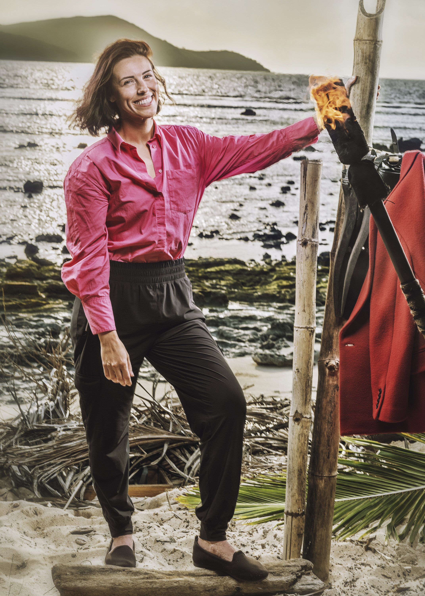

Genevieve Mushaluk

Episode 1
Genevieve found the season's first idol — the Billie Eilish Boomerang Idol — near a log on the beach while walking with Stephenie. The rules required her to send it to another tribe. She, Stephenie, and Kyle chose Ozzy, reasoning he has a history of being voted out with an idol in his pocket. If Ozzy is voted out without playing it, the idol boomerangs back to Genevieve. She was devastated by Kyle's medevac, losing her closest strategic partner.
Advantages
- Boomerang Idol (Finder) — Currently held by Ozzy on Cila. If Ozzy is voted out with it, the idol returns to Genevieve. Ozzy does not know this.
Alliances
Core member of the majority alliance with Colby, Stephenie, and Q. One of only two majority members who can still vote (with Stephenie). Had a tense exchange with Aubry, who identified her as "dangerous."
About
Genevieve Mushaluk was one of the villains of Season 47, the corporate lawyer placing 5th and becoming a jury member. She returns almost immediately after her debut season, and her sharp strategic instincts make her a player to watch.